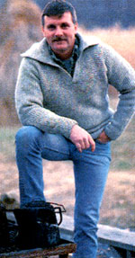
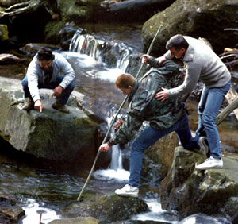
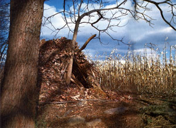

The Tom Brown School
March/April 1988
The Wilderness Skills Schools, Part III
A short course in tracking, nature
and wilderness survival
By Terry Krautwurst
Photographed by William Waldron
I'm standing at the upper edge of an overgrown hillside, a few sloping acres of knee-high grasses and brush in rural western New Jersey. Above, half a dozen raucous crows play in a blue sky-the definitive blue sky, cloudless, crystal clear. Along the lower edge of the field huge oaks and willows rise above lesser foliage, their boughs arcing over a wide river, dappling the water in leafy shadow.
A typical countryside scene-unless you include the 40 or so human posteriors and pairs of legs grazing in groups scattered across the field. The bodies to which they're connected are thrust out of sight into bushes and briars and grasses, heads hidden like-well, no, not a bit like ostrich heads hidden in the sand. Hardly evading the world, these people are deep in discovering it.
This is the next-to-last day of a six-day Standard (introductory) course at the Tom Brown School of Tracking, Nature and Wilderness Survival.
An excited voice emerges from somewhere in a clump of sedge. "Tom! I found something! I think it's a weasel hair!" A hand pops up, then a head. "Wow, look at this!" another voice, belonging to a bluejeaned backside, shouts. "Hey, I think I found a sleeping chamber!" someone else hollers. "Look at all these trails!" an awed voice exclaims, its legs snaking deeper into the vegetation.
The excitement of discovery is contagious, and, dropping to my knees, I gladly shed my role as observer/journalist, part a layer of matted grass, poke my head downward and join my fellow students in a heretofore unseen world. "I'll be damned," I whisper to myself as I immediately uncover a tiny, wellworn path-too small for rabbits, probably a vole run-winding around a sapling and meandering downhill. "Would you look at that."
Belly down, nose inches from the ground, I study the two-inch-wide trail, a Lilliputian highway paved with grass pummeled smooth by countless wee footsteps. The closer I look, the more I am drawn into life in this grass forest, and the more I see: some droppings here, a hair there, some tiny scratch marks, a rounded, nestlike chamber. Carefully replacing the thatch above one section before parting the vegetation over the next-as our instructors have repeatedly reminded us to do-I trace the tunnel downhill. Every few feet it intersects other paths, some hidden, some exposed, some larger, some smaller-roads traveled by mice, deer, foxes, ground hogs, raccoons. Together, I realize, they form an amazing network, a sort of macrovascular system pulsing with animal movement, that must cover the entire field, and-good Lord, think of it-all the fields adjoining this one, and all those adjoining them.
Transfixed, I slither further into the underbrush.
Some minutes later, a sonorous voice breaks the spell. "OK, people, gather round." I stand up, blinking in the sunlight, in time to see my fellow students emerge, heads popping up through the vegetation one by one, like surfacing scuba divers. We assemble around our mentor, Tom Brown, Jr., himself.
At 37, Brown is a teacher, author and living legend. He looks the part. Over six feet tall, he stands ramrod straight, a blue T-shirt stretched across a broad chest and powerful biceps. His hair, showing streaks of silvergray, is cut short, military style-a far cry from the flowing tresses he has worn until only a few months ago. His eyes are steel blue, piercing, always darting, never focusing for long on any one person or thing.
Brown became a national figure in 1976, when his first book, The Tracker, was published. The Tracker tells the extraordinary story of Brown's childhood, spent in the New Jersey Pine Barrens under the tutelage of an elderly displaced Apache scout named Stalking Wolf. From the time he was seven years old, he was trained by Stalking Wolf in the old ways, the traditional skills and philosophies of Native Americans. Brown believes, in retrospect, that he was chosen by Stalking Wolf to pass along the ancient teachings and skills.
In 1977 he started this school, today probably the best-known and largest wilderness survival and tracking school in the country. He has also written a set of field guides, a second autobiographical book, The Search (a third is in the works), and countless magazine articles, including a popular series, "At Home in the Wilderness," for MOTHER.
But even before he started the school or wrote his first book, Brown was known among law enforcement and government agencies as "The Tracker." His exploits in finding criminals and lost children, sometimes staying on the trail without provisions for days, are epic. He is widely acknowledged as the best tracker in the country, period.
This week, though, he is our teacher, our medicine man, our Stalking Wolf.
Brown gestures with a sweep of his arm to the field and meadows adjoining. "People travel hundreds of miles to crowd into places like Yosemite or Yellowstone to see the wildlife," he says, "when there's so much to see and appreciate right in their own back yards. A field like this contains every bit as much wildlife, every bit as much natural diversity and variety, as any park anywhere in the country. And all you have to do is learn how to look for it. That's all. Just learn how to look and see."
We have spent countless hours this week doing just that, and a great deal more. In five days of almost nonstop lectures and workshops-beginning at 8:00 each morning and continuing into the night, sometimes past midnight-we've covered an astonishing variety of skills, each in depth: making fires, building shelters, finding water, building traps and snares, skinning and tanning, making natural cordage, cooking, arrow and bow making, flint knapping, Eolithic rockwork, stalking, foraging, hunting and-of course-tracking.
"I pack this course with information, and then I pack it further," Brown told us the first night. "Time is critical here. I use every minute. When you're done on Sunday and you look at how much we've gone over, your head will reel."
My head's been reeling since the second day. I've filled two notebooks with lecture notes and I'm working on another. My hands are scratched and calloused from workshops: from carving traps, twisting plant fiber to make cord, chipping rock into cutting tools.
After lunch, each student uses the time remaining before the next class to practice skills or complete projects started earlier. An options trader from Brooklyn pulls a nearly completed bone arrowhead from his pocket and begins scraping it across a piece of rock to give it a keen edge. In the field beyond the cooking area, three students-a real estate salesman, a machinist and a physical therapist-set chunks of firewood on end in a line as targets, move back 30 feet and practice throwing a rabbit stick, an arm-length, wrist-thick piece of tree limb that, when hurled correctly, is a deadly accurate survival weapon for hunting small game.
Over by an outbuilding another student stands staring straight ahead, arms outstretched to either side, wiggling his fingers slightly. It's an exercise in stimulating peripheral vision, an element, Brown says, essential to increasing your awareness of the world. He has taught us to widen our vision and avoid fixing our eyes in any one direction for long-a technique he calls "splatter vision." "Always be a tourist," he says. "Look at the room you're in, the street you're on, the trail you're walking, as if you were seeing it for the first time-no matter how many times you've seen it before. Your mind always seeks the familiar, but you miss so much. Vary your vision. Refuse to let your eyes focus on the same things you always look at. Force yourself to look in different places. Wherever your vision goes, your senses go."
Other students are at the edge of a cornfield, practicing the graceful, excruciatingly slow movements we've learned for stalking. Still another is down on all fours, notebook at side, imitating the basic animal walking motions Brown has taught us. "You can't track an animal if you don't understand how it moves," he says.
A shrill squeaking sound-wood rubbing against wood-comes from behind me, and I cringe. I don't have to look to know that it's a student working a bow drill, the basic survival fire-starting apparatus consisting of a notched fireboard, a dowellike spindle, a handhold, a small bow and a tinder bundle. Making one, then starting a fire with it, was our first workshop. In typical Brown fashion, we were provided a chunk of cedar, the least desirable of acceptable woods. "If you can get a bow drill fire going with cedar," Brown says, "you can get one going with any of the better woods."
I'm embarrassed to be one of the few students who have yet to succeed. I sigh. What the heck, I'll try again. I get the drill I've made. I fluff up the tinder bundle and lay it on the floor, place the fireboard over it, wrap the bow's cord around the spindle, position the spindle's bottom end on the board, put the handhold on the top end.
OK. Left foot anchors the fireboard. Right knee behind left foot. Chest down tight against thigh, left arm braced across shin. Start sawing with the bow, easy at first, back and forth. Now pick up a little speed. Back and forth, back and forth. Faster. Push down harder on the spindle. There, some smoke. A little faster, bear down a little harder (I'm running out of breath, my arm's cramping). More smoke. Good, faster now, faster; push down a little harder . . . pop, clatter . . . the spindle flies off the board and across the room, just as it has countless times before. Feeling beaten, I walk over and pick the spindle up, forgetting that the end is hot, and burn my hand-injury added to insult.
Just then Frank, one of the school's instructors, comes around the corner. "Did you get your fire yet?" he asks jovially. I grimace. "Look," he says, "let's get together after tonight's lecture and see if we can't figure out what you're doing wrong."
"Nah, thanks, that's OK," I say, shrugging. "I'll just practice when I get home. It's not that important, no big deal."
I lie.
The afternoon's tracking lecture, like those before it, is electrifying. When Brown talks tracking, his voice shakes with excitement, his eyes burn with intensity, he paces back and forth, his hand flies across the blackboard to illustrate a point. He is obsessed with tracking and admits it. As a child, he developed a callus across his lower chest from spending so much time crawling on the ground poring over tracks.
"Every mark is a track," Brown teaches. "Everything that is not flat is a track; the Grand Canyon is a water track, a fallen tree is a track of the heartrot that killed it and of the wind that felled it. Every dent, pocket, fissure, scrape, mark in the ground, every rolling hill, every scratch is a track. The ground is a manuscript, an open book; it is littered with tracks, from the largest to the smallest, and each one tells you something."
To me, the lectures are a revelation. Brown's teaching goes way beyond merely identifying foot or paw prints in the dirt. "Earth mother gives you a clear print to follow maybe 5% of the time," he says. He teaches us compression tracking-identifying vague depressions in the ground or deep leaf litter or thin dust by their general shape and the patterns in which they're arranged.
Then he moves to an even more subtle art, the reading of what Brown calls pressure releases, the characteristic ways the earth compresses, cracks, crumbles, moves, responds to a foot or paw. There are hundreds of them, and each means something different. There is a single release that indicates an increase in speed from slow jog to jog, another for a slight turn of the head to the right, another for a momentary hesitation (perhaps the person or animal considered changing direction for an instant, then decided otherwise). Pressure releases tell all.
"From one footprint," says Brown, "I can tell a person's height and weight, gender, emotional state, condition of health and degree of strength. I can tell whether they're right- or left-handed, whether their stomach is full or empty, whether they have to go to the bathroom. I can even tell a few days before a person gets a cold, because there's a r estriction in breathing."
The lecture lasts well into the evening. Brown's energy never abates. He draws dozens of release patterns on the blackboard. He steps into a tracking box-sort of a pro quality sandbox-and demonstrates how even subtle body movements are revealed in prints. He is unrelenting. He sketches more releases. He tells us of releases within releases, of microreleases. We learn that all of the releases we've discussed can be created not only by a foot or paw, but by individual toes, by each lobe of an animal's heel pad.
It's simply too much for a mortal to absorb. By the time we file out, I've filled my third notebook and I'm brain dead, the victim of a tracking fanatic. I take advantage of a rare lull in activities and tumble into my sleeping bag.
Later that evening, an hour before we're scheduled to partake in a traditional sweat lodge ceremony-a culmination of the week's lessons-I walk into the wrong room at the wrong time. A half dozen students are standing in a loose circle cheering, and in the center a student who hadn't yet managed to get a bow drill fire going is holding a flaming tinder bundle.
They see me before I can back away. "OK, Terry, you're next! You can do it! You've got to do it! Think fire! Think fire!" Before I know it, I'm in the one place in the world I least want to be, kneeling over a cold, hard fireboard, bow in hand.
I start sawing away, back and forth, back and forth. There's a wisp of smoke. I saw faster. More smoke. "Go! Go!" the people in the background are chanting. I push down harder, saw faster. A little more smoke. Back and forth, back and forth, for what seems an eternity. Suddenly the smoke billows and someone shouts, "You've got a coal, you've got a coal!" I drop the bow, grab a toothpick-size twig and gently nudge the coal into the tinder bundle. Carefully, I pick up the bundle, cradle the coal inside the fibers and bring the tinder to my lips. I blow gently. The coal glows red, the tinder smokes. I blow again. It glows redder. I blow again. The coal turns bright orange-and dies. A groan goes up from the cheering section.
But I know what I've done wrong, and I'm already sawing away again by the time my coaches are telling me: "Feed the coal! You've got to keep the tinder all around the coal!" The smoke billows again, I get a coal again, I tip it into the tinder and bring the bundle to my lips again. I fill my lungs with air and blow it out, long and steady. The coal burns orange. I press the tinder inward, take another breath, blow it out. More burn, more smoke. I keep the rhythm going. Breathe in, blow out, more tinder, breathe in, blow out. The smoke thickens and someone whispers, "He's got it, he's got it." Breathe in, blow out, breathe in, blow-whoosh! The bundle bursts into flames!
I am no shouter; at football games, a muttered "All right" is the most I can manage when the home team makes a touchdown. But at the sight of that fire, that astonishing flame created from nothing, something way down inside of me wells up and before I can catch myself I'm standing and shrieking like a banshee, announcing with a triumphant primal scream that I've made fire.
It is a night for profound experiences. In the sweat lodge, there is no light, and in the darkness no up or down, no sense of space or time. There is only the heat-intense, purifying, drawing water from our bodies-and the rhythm of our breathing, of Brown's voice chanting, of ebb and flow. "Every drop of water contains a little bit of the ocean," Brown has told us. "In the sweat lodge you can feel the ancient pull of the tide, reminding you of your origins and of the unity of all life."
We emerge from the lodge into a cold, bright, crystalline night. I stand under the stars, throw my head back to the sky and bask.
By 9:00 the next morning we're on our hands and knees out in front of the barn with Brown, tracking mice across the farm's hardpacked gravel driveway. I can't see the tracks Brown points out until I heed his instructions: "Always keep the track between you and the light, get close to the ground, and look at the surface at a severe angle." I lean way down, my eye an inch or two above the ground, low morning sun opposite. There; so subtle they're barely more than a reflection, the crucifix-like compression shapes characteristic of rodents.
An hour later we're back in the classroom. Most of us have to leave soon. "I have a confession to make," Brown says. "I brought you here on false pretenses. You came here to learn survival skills, and I've taught you those skills. I know that with what you've learned you'll be able to survive, quite comfortably, anywhere in the country as long as it's not a parking lot. But that's not why I spent this week with you." He pauses. His voice shakes with emotion. "I believe we're fighting a desperate war to save what's left of the earth from destruction. The earth is our mother. She is lying raped and dying by the side of the road. She needs our help. We have to help, or she'll die, and we with her.
"I believe that teaching survival gets to people's hearts, that when a person learns how to enter the world purely, unencumbered by society, where you live a hand-to-mouth existence with the earth, a connection develops. That's why I run this school, to bring as many people as possible back to the earth, and to send them out to teach other people."
Brown speaks slowly, pleadingly. "I hope that when you go home you will have a new love and respect for the earth, that you will have a commitment to help save it, and that you will help bring others back close to the earth. Please, people, take what you have learned here this week and teach others. Time is running out."
The room is silent, charged with passion and purpose.
By late afternoon, I'm on a crowded bus headed back to the Newark Airport, Brown's words still ringing in my ears. I'm leaving the school with far more than I expected.
Am I an expert tracker? No, that'll take time. But I've got an awfully good start. I've acquired survival skills that I know will keep me alive should I ever need them, and that in any case will allow me to hike, camp or otherwise enter the natural world free of worry, free of what Brown calls the "what if" question: What if I lose my backpack, what if I break my leg . . . And I'll be able to teach those same skills to my wife and children and friends.
Most important, though, I've gained a greater sense of my place in the world and a heightened awareness of the life around me. I have begun, in a small way, to feel what the Native Americans called "the spirit that moves in all things."
The bus pulls into the Newark Airport, a hubbub of concrete and cars. It has been quite a week.
Editor's Note: Tuition for the six-day Standard Class at the Tom Brown School of Tracking, Nature and Wilderness Survival is $515. Classes are held once or twice a month throughout the year beginning in April. For further information and a schedule of classes, write The Tracker, P.O. Box 173, Asbury, N J 08802-0173.
 ""The Tracker"" (above) stresses outdoor skills and respect for the wild. Here he helps advanced students learn atlati throwing (below) and select river stones for primitive tool making. |
 Gigging dinner with a homemade spear; a skill for expert adventurers. |
 The leaf hut is one of the simplest to construct, yet most effective, emergency shelters. It offers a warm, dry temporary home for the lost hunter or hiker. |
|
 |
 |
|